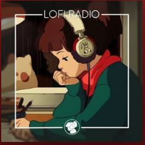

Listening to Music
Late Night Melancholy
My most played music on my playlist This song never failed to make me relax and focus on what I was doing.
With or without doing something, I play this song almost every day.
Spotify: Late Night Melancholy on Spotify
Lofi Radio

This is a song compilation with relaxing beats made by Lofi from a YouTube channel called "Chill Cow".
I play this whenever I'm doing something, like writing, browsing, playing, walking, etc.
Spotify: Lofi Radio on Spotify